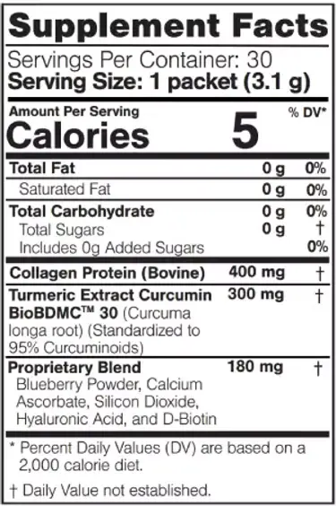
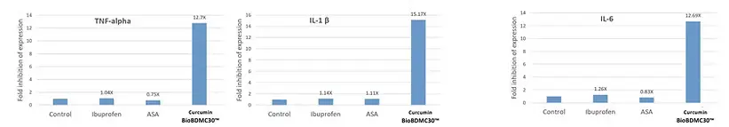

Связаться
Связаться

Regener8 от BEpic
КОЛЛАГЕНОВЫЙ НАПИТОК КУРКУМЫ С КУРКУМИНОМ!
Антивозрастной И Противовоспалительный!
Укрепляйте свое здоровье и долголетие с каждым вкусным глотком! REGENER8™ - это коллагеновый напиток куркумы с куркумином со вкусом чая. Согласно проведенным исследованиям, этот напиток не только помогает вам выглядеть и чувствовать себя великолепно, но и имеет потрясающий вкус. Запатентованная смесь является быстродействующей (действует в течение нескольких часов, а не дней), обладает высокой биодоступностью для организма и доказала свои антивозрастные и противовоспалительные свойства.
REGENER8™ основан на BioBDMC™ – запатентованном, мощном, натуральном экстракте куркумы, куркумине (биологически активное вещество куркумы), который, как было показано, помогает при болях, отеках и других распространенных недугах, связанных с системным воспалением. В его состав также входит высококачественный белок коллагена, обеспечивающий дополнительную восстанавливающую пользу для здоровья, включая улучшение общего состояния и внешнего вида кожи, волос и ногтей, а также укрепление здоровья костей, суставов и сухожилий.
REGENER8™ не только вкусный, но и полезный. Он содержит всего 5 калорий на порцию и на 100% не содержит сахара и глютена. В качестве дополнительного бонуса он подслащен натуральным подсластителем с нулевым содержанием углеводов, который имеет вкус сахара (но без калорий и скачков сахара в крови) и, как было обнаружено, помогает обуздать аппетит и ненужное потребление углеводов. Более того, REGENER8™ великолепен на вкус как в теплом, так и в холодном виде.
Улучшите Ваше Здоровье И Долголетие!
ПРЕИМУЩЕСТВА ПРОДУКТА:
- Улучшает эффективность иммунной системы
- Снимает боль в суставах и хроническое воспаление
- Помогает сохранить здоровье костей и суставов
- Укрепляет кожу, волосы, ногти и соединительную ткань
- Помогает контролировать аппетит и сахар в крови
ДЕТАЛИ О ПРОДУКТЕ:
- Kоллагеновый напиток куркумы с куркумином со вкусом чая
- Без сахара и всего 5 калорий
- Быстродействующий и биодоступный; Эффект ощущается в течение часов (не дней)
- Содержит проверенный, запатентованный экстракт куркумы и куркумина
ПРИМЕНЕНИЕ:
Добавьте 1 пакетик в 6-10 унций (177-295 мл) теплой или холодной жидкости (например, воды или чая).
ПРЕДУПРЕЖДЕНИЕ:
Проконсультируйтесь с врачом перед приемом любых пищевых добавок, особенно если вы беременны или кормите грудью, страдаете заболеванием, или принимаете лекарства по рецепту.
XРАНЕНИЕ:
Храните в сухом прохладном месте для сохранения свежести.
СДЕЛАНО В США
ДЕТАЛИ ОБ ИССЛЕДОВАНИЯХ
Куркумин BioBDMC™ Эффективен В 14 Раз Больше, Чем Ибупрофен И Аспирин
Куркумин BioBDMC™ - это запатентованная смесь, созданная с помощью нового механизма. Этот механизм оправдан фармакологическими исследованиями, которые рецензируются и публикуются. Было показано, что он действует в 14 раз эффективнее, чем ибупрофен и аспирин (АСК). Более того, Curcumin BioBDMC ™ имеет эффект в течение часов, а не дней (как обычный 95% куркумин).
Базовая Фармакология - Обычный Куркумин 95% По Сравнению С Curcumin BioBDMC™
Куркумин BioBDMC™ подавляет два ключевых белка-регулятора (NF-kB и MSK1) воспалительного пути. Обычный куркумин (даже 95% вариации) может подавлять только один из них (NF-kB). Куркумин BioBDMC ™ подавляет второй ключевой белок (MSK1), участвующий в активизации процесса воспаления. Обычный куркумин многих типов, протестированный и отображаемый на одном графике, не может подавлять (останавливать) этот белок (MSK1). В конечном счете, куркумин BioBDMC ™ подавляет два ключевых белка (MSK1 и NF-kB), тогда как обычный куркумин на 95% подавляет только один из них (NF-kB), что, как известно, является его противовоспалительным механизмом.
ДОПОЛНИТЕЛЬНЫЕ ДЕТАЛИ
REGENER8™ содержит BioBDMC™ – запатентованный противовоспалительный, натуральный экстракт куркумы, куркумин, который облегчает боль, отек и другие распространенные заболевания, связанные с системным воспалением. Было показано, что он действует в 14 раз эффективнее, чем ибупрофен и аспирин. Многие высококачественные исследования показывают, что куркума имеет большую пользу для вашего тела и мозга. Он обладает мощным противовоспалительным действием и является очень сильным антиоксидантом. Куркумин - это биологически активное вещество куркумы, которое борется с воспалением на молекулярном уровне, что важно для предотвращения и даже лечения заболеваний. Куркума также обладает мощным антиоксидантным действием; он самостоятельно нейтрализует свободные радикалы, а также стимулирует собственные антиоксидантные ферменты организма.
Для дополнительной пользы для здоровья REGENER8™ также включает высококачественный белок коллагена, который может улучшить внешний вид и общее состояние кожи, волос и ногтей, а также может способствовать здоровью костей, суставов и сухожилий. Коллаген может помочь замедлить эффекты старения, например, восстанавливая влажность кожи, уменьшая морщины и улучшая эластичность, тонус и яркость. Он также играет важную роль в здоровье суставов, сухожилий и костей. Есть некоторые свидетельства того, что добавки коллагена также могут помочь увеличить мышечную массу, предотвратить потерю плотности костей и облегчить боль в суставах.
REGENER8™ подслащен натуральным подсластителем, Glyvia™. У этого подсластителя нулевое содержание углеводов, его вкус похож на сахар, но без калорий и не вызывающий скачков сахара в крови. У него нулевой гликемический индекс, поэтому он не повышает уровень глюкозы в крови в организме. Кроме того, согласно подтвержденным фармакологическим исследованиями, он повышает активность инсулина и очистку сахара в крови. Также было обнаружено, что он помогает снизить аппетит и ненужное потребление углеводов.
 Elev8
Elev8 REGENER8
REGENER8 ACCELER8
ACCELER8 BEPIC T
BEPIC T ARIBELLA COLLAGEN+
ARIBELLA COLLAGEN+ IMMUNOCODE
IMMUNOCODE B-CARDIO
B-CARDIO Gr8 Greens
Gr8 Greens Drink2Shrink™
Drink2Shrink™ IMMUNE
IMMUNE Gr8 Omegas
Gr8 Omegas Elev8 Drink
Elev8 Drink Rejuven8
Rejuven8